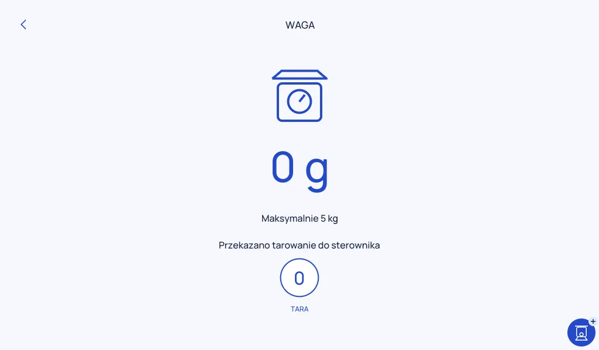

03 / Próby na sprzęcie ·
Waga, pokrętło i przepis
Dopiero na urządzeniu widać, które szczegóły robią różnicę.
Do próby ważenia włożyłem do misy przedmiot. Fabryczna aplikacja i Pro pokazały 475 g. Po wciśnięciu TARA w Pro odczyt spadł do zera, a po wyjęciu przedmiotu pokazał minus 475 g. Sprawdziłem też fizyczne pokrętło. Obrót zmienił nastawę z 37°C na 45°C.

Równolegle próbowałem przygotowywać przepisy z pomocą ChatGPT i dopasowywać kroki do Connecta. Mam działające przykłady do dalszych prób. Chcę też pokazać, jak przygotowany przepis może trafić z telefonu na robota. Parowanie i sposób pokazywania połączonych urządzeń to osobny temat, który dopracowuję.
W tym etapie Pro pokazuje nastawy kroków, a pracę silnika i grzałki przy prowadzeniu przekazuje do fabrycznej aplikacji. Następny sprawdzian to pełne gotowanie na urządzeniu, od wyszukania dania do ostatniego kroku.
Komentarze
Komentarze są dostępne na GitHubie.
Otwórz wątek i skomentuj